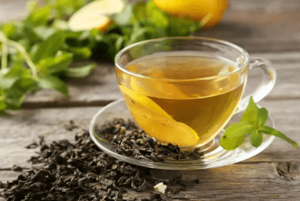
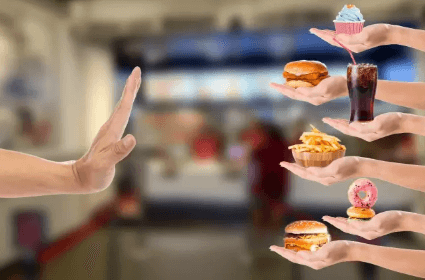

一言不合就溃疡？试试这些“灭火器”
春天到了，阳气升腾、万物复苏，
你本来就不小的食欲还在与日俱增，
煎炸、爆炒加烧烤，火锅绝不点清汤！
小日子过得确实很爽，但是——
很抱歉，请在手机微信登录投票
你是否出现了以下症状？（多选）
 心烦、睡眠不安
心烦、睡眠不安- 便秘
- 舌苔增厚、口腔溃疡、咽疼音哑
- 头晕目眩、发脱齿摇、腰腿酸痛
只要你中了任何一条，
很遗憾地告诉你，你大概是上火啦！
为什么总是时不时就上火？
时常油炸爆炒、肉食零嘴不断，易发“食火”。
第二，不够健康的生活方式：熬夜加班或追剧，导致“心火”。
第三，外界燥气入体：春天阳气上升，或是室内燥热，造成“燥火”。
管不住嘴？那用食物来“救火”！
吃货们总是在困惑：“为什么好吃的东西都是上火的？”既然管不住嘴，那也用同一招来应对上火吧！
第一，要吃的对！ 要适当多吃一点性凉的食物、以及富含维生素和膳食纤维的食物。- 莲藕：养胃清热，功效是清热生津、滋肝润肺，与梨汁一起煮汤效果更好。
- 柚子：含有丰富的维生素C，除了能清热外，还可以提高人体抵抗力。
- 西芹：能促进停留在我们肠道内食物残渣排出，少了这些容易让我们火气的不良物质，上火很快就会消除。
菊花茶、绿茶、乌龙茶、薏米水等，既养生，又能起到降火的功效。

第三，有时候还是需要你管管嘴的！
尽量少吃“生火”食物，尤其在上火的时候尽量避免再“火上浇油”。
上火时少吃甜食、油炸食物、热性食物（辣椒、大蒜、荔枝等）。

合理起居，火气拜拜！
除了饮食，健康合理的生活习惯也能帮你安抚火气。你可以做的有：
第一，常开窗换气：使空气流通，还可以有效地减弱室内电子产品产生的热辐射。
第二，保证高品质的睡眠：选择高度合适的枕头、不要亮着灯睡觉、睡前做些简单的运动。
第三，多参加户外活动：舒解压力、缓解疲劳、强身健体。
火气时常说来就来，
吃得对一点，休息得好一点，
这个春天，就别再惹“火”上身了！